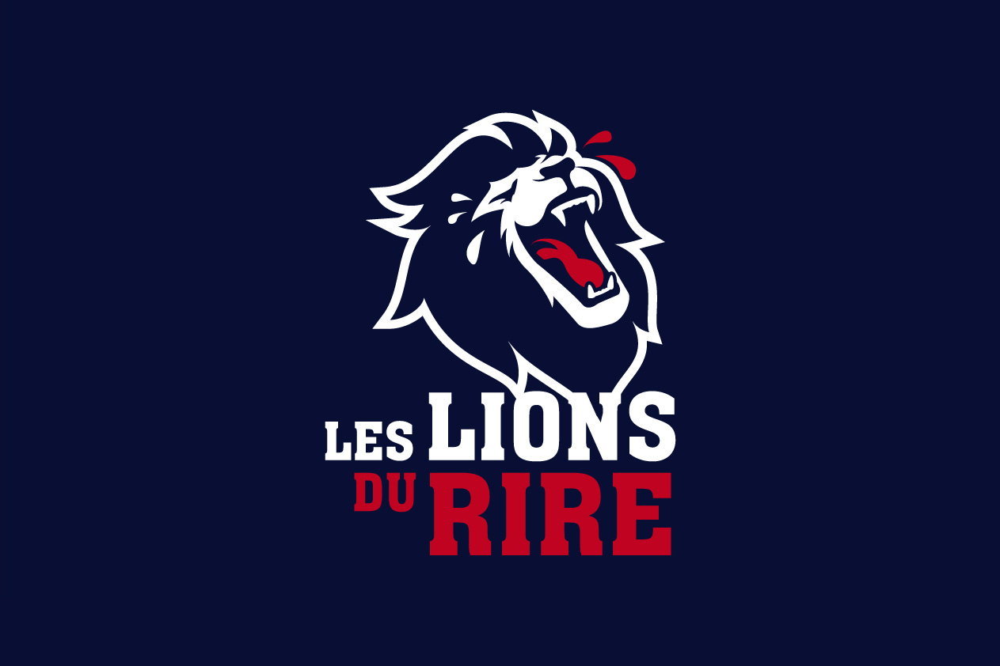

Univers scénique
Humour & Scène
Univers Événementiel que je partage avec l'association Ouhlala Lyon et le Festival Les Lions Du Rire, tous deux fondés par Farid NASRI. Depuis plus de 12 ans, il s'engage activement pour promouvoir la solidarité, la culture, le sport et l'entraide sociale à Lyon et au-delà.
← Retour à l'accueil
Présentation
Une page dédiée à la scène et à l'énergie visuelle
Il y a maintenant 10 ans, j'ai rejoint Farid dans une aventure qui a commencé de manière inattendue, lors d'un tournoi de football en salle. J'accompagnais mon père et son équipe ce jour-là, et au-delà de l'ambiance sportive — le bruit des baskets sur le parquet, les sifflets et les encouragements du public — il manquait selon moi un élément essentiel : la musique.
J'ai alors proposé à Farid d'ajouter une ambiance musicale, une initiative qui s'est rapidement révélée indispensable. Suite à cette première collaboration, il m'a invité à participer aux castings du festival Les Lions du Rire. Malgré un niveau artistique élevé, les transitions entre les humoristes manquaient de dynamisme. J'ai donc apporté une touche musicale pour rythmer les passages, ce qui a considérablement amélioré l'expérience.
Depuis ce jour, j'interviens en tant que régisseur son officiel sur plusieurs événements, dont le Festival Les Lions du Rire, Vaulx Mieux En Rire, VilleurVanne, et bien d'autres.
Mes principales responsabilités
Préparation technique
- Préparer et installer le matériel son selon les besoins
- Anticiper les contraintes techniques et vérifier que tout fonctionne correctement
Régie & live
- Gérer le son en direct pendant les événements
- Assurer des transitions fluides et une bonne ambiance sonore
Organisation & coordination
- Travailler avec les équipes techniques et les artistes
- S'adapter au déroulé et aux contraintes du planning
Qualité & expérience public
- Veiller à un bon rendu sonore pour le public
- Participer au rythme et à l'ambiance des spectacles
Compétences
Galerie
Moments de scène
Quelques souvenirs d'événements — remplace les placeholders par tes propres photos et vidéos.
Remplace par ton lien YouTube
Remplace par ton lien YouTube
Remplace par ton lien YouTube